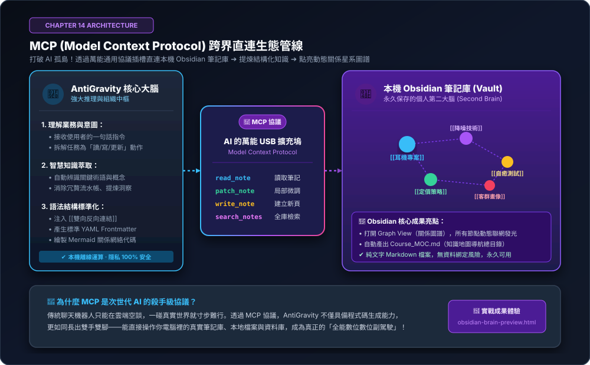

MCP 協議跨界實戰：連接 Obsidian 與本機工具，打造個人專屬「第二大腦」知識提煉系統
打破 AI 的孤島極限！傳統的聊天機器人就像關在玻璃房裡的天才，根本碰不到你電腦裡的真實筆記與檔案。本章解鎖全球次世代標準——MCP（Model Context Protocol，模型上下文協議）。如同為 AI 裝上萬能 USB 擴充槽，讓 AntiGravity 直連本機 Obsidian 筆記庫，自動提煉每日工作心得、補齊 [[雙向反向連結]]，並親眼見證你的個人知識星系圖譜發光聯網！
14-1 觀念破冰：打破孤島！什麼是 MCP 模型上下文協議？
很多學員每天都在用 AI，但也深刻體會過這種無奈：
❌ 玻璃房裡的 AI 天才
AI 很聰明，但它看不到你電腦裡累積多年的工作筆記、會議記錄與靈感草稿。每次都要手動複製貼上，麻煩又中斷思緒。
❌ 散亂的「數位垃圾場」
隨手記在 Obsidian 或記事本裡的東西雜亂無章，過兩週就忘光，從來沒有時間好好整理，更不會主動形成知識關聯。
❌ 手動打雙向連結太痛苦
聽說 Obsidian 的 [[雙向連結]] 很強，但每個詞都要手動打中括號，維護成本太高，最後半途而廢。
Model Context Protocol（MCP） 是一套開放標準協議。只要插上這條線，AI 就能長出雙手雙腳，安全地讀取你本機的 Obsidian 筆記庫、本地硬碟檔案與資料庫，全程資料不出門，100% 本機隱私保證！
14-2 工具插槽就緒：Obsidian 安裝、雲端整合與基本使用心法
在讓 AntiGravity 幫你打理筆記之前，我們先花 3 分鐘把這座專屬的「第二大腦基地」搭建起來。Obsidian 是目前全球公認最強大的個人知識管理軟體，核心優勢在於「純文字 Markdown 儲存、零資料綁定、永久可用」。
Obsidian 下載安裝與「Google 雲端硬碟」跨裝置整合心法
- 下載軟體（完全免費）：前往官網 obsidian.md 下載對應版本（Windows / Mac / Linux），安裝過程免註冊帳號，開箱即用。
- 關鍵心法：筆記庫（Vault）首選「Google 雲端硬碟」：
💡 為什麼強烈推薦選 Google Drive？
• 跨機器無縫同步：只要安裝「Google 雲端硬碟電腦版」，公司桌機與家裡筆電就能自動雙向同步筆記，完全不需額外購買昂貴的雲端同步服務！
• 純文字極致省空間：數千篇 Markdown 筆記通常只有幾十 MB，絲毫不佔硬碟。
• 雙重備份防呆：Google Drive 內建歷史版本回溯，加上 Obsidian 內建的「檔案還原（File Recovery）」，筆記永遠不怕手殘誤刪！ - 建立筆記庫：打開 Obsidian 點擊「建立新筆記庫（Create new vault）」，命名為
MyBrain，路徑直接選擇你的 Google 雲端硬碟資料夾（例如G:\我的雲端硬碟\MyBrain）。
Obsidian 基本使用方式與高效率「資料收集心法」
使用 # 大標題、## 中標題、- 條列清單、**粗體**，排版清爽優雅，在任何軟體打開都是通用純文字。
只要打出兩個中括號 [[筆記名稱]]，Obsidian 就會自動建立超連結！點擊就能跨頁面跳轉，筆記之間互相串聯成網。
按下快捷鍵 Ctrl + G（Mac 為 Cmd + G），一鍵展開壯觀的 3D 知識網絡圖，親眼看著你的思想神經元發光生長。
平時看到好文章或有突發靈感，不要給自己「該分類到哪」的心理壓力！統一建立一個 00_Inbox/ 資料夾，隨手記成便條草稿丟進去。
人類只管負責收集，而最花時間的「分類整理、打標籤、建立雙向連結」，接下來全部交給 AntiGravity 透過 MCP 來自動完成！
當本機 Obsidian 筆記庫準備就緒後，AntiGravity 就能透過 MCP 協議直接「插上擴充插槽」，擁有以下四大特工級武器：

核心大腦 ➔ MCP 通用協議 ➔ 直連本機 Obsidian 筆記庫 ➔ 自動建立雙向 WikiLinks ➔ 點亮動態知識星系圖譜。
🧩 MCP 賦予 AI 的 4 大超能力：
read_note：直讀筆記。AI 能直接調閱你電腦中任何一份.md筆記，不必人工複製貼上。patch_note：局部微修。只替換筆記中的某個段落，保留你原有的排版與格式，絕不覆寫整份筆記。write_note：建立新篇。自動在筆記庫建立全新專題、總目錄（MOC）或每日日記（Daily Notes）。search_notes：全庫檢索。毫秒級搜尋上百篇筆記中的關鍵術語，找出潛在關聯性。
14-3 核心動手做：打造耳機電商專案的「第二大腦」
在前面第 1 ~ 13 章中，我們累積了許多零散的專案筆記（耳機規格、競品報告、定價策略、自癒測試）。現在我們要讓 AI 自動替我們將它們串聯成一座「互相連結的知識神經網絡」：
準備工作：本機 Obsidian 筆記庫（Vault）結構
你的筆記庫裡有幾篇隨手記錄的草稿檔案：耳機專案.md、降噪技術.md、定價策略.md、自癒測試.md。
下達作戰指令：一鍵啟動知識提煉與雙向連結
請透過 MCP 協議讀取我的 Obsidian 筆記庫中關於『AeroPulse Pro 耳機專案』的相關筆記：
1. 智能概念萃取：分析各篇筆記內文，自動辨識核心術語（如「降噪技術」、「定價策略」、「自癒測試」、「客群畫像」）。
2. 自動雙向連結：在每篇筆記的適當語句中，自動注入 [[雙向反向連結]] 語法，建立筆記之間的超連結紐帶。
3. 知識地圖產出：在筆記庫根目錄建立一份全新總目錄『Course_MOC.md（Map of Content）』，以結構化大綱列出整個專案的知識脈絡與各頁面導航連結。
4. 保持乾淨排版：只使用局部更新（patch），絕不破壞我原有記錄的文字與筆記結構！成果驗收：打開 Graph View 親見知識星系發光
AI 執行完畢後，切換回 Obsidian 軟體，按下快捷鍵 Ctrl + G 打開關係圖譜（Graph View），原本各自孤立的小圓點瞬間長出了無數條連結絲線，發光連成一體！
14-4 初學者實戰寶庫：三大生活化 MCP 應用實戰（情境、暗坑與提示詞）
MCP 不只可以用在專案開發，更能融入你的日常生活與工作流中！以下提供初學者最實用的三大生活實例：
📝 案例一：【日常閱讀】零散隨筆「自動雙向連結與標籤整理器」
適用：讀書心得 / 靈感隨筆生活痛點：平常看 YouTube 影片、商業文章隨手記了幾段話在 Obsidian，內容東拼西湊、排版凌亂。想把這些筆記整理成有系統的心得，手動分類與打連結要花上一小時。
請透過 MCP 讀取我 Obsidian 筆記庫中『每日靈感/』資料夾下的最新 3 篇筆記：
1. 幫我梳理這三篇筆記的核心洞察，去除流水帳贅詞。
2. 自動為內文中的關鍵術語加上 [[雙向連結]]（例如概念名稱、名詞定義）。
3. 在文章開頭補上標準 Frontmatter 標籤（如 tags: [AI學習, 商業靈感]）。
4. 直接更新回對應的本機檔案中，保持原有格式乾淨整齊！🗂️ 案例二：【個人秘書】本機混亂桌面「一鍵智慧歸檔與 Daily Note 備忘錄」
適用：檔案整理 / 每日日記生活痛點：電腦桌面堆滿了「未命名的截圖.png」、「會議記錄草稿.txt」、「發票明細.pdf」，每次找檔案像大海撈針。知道該整理，但一想到要把檔案一個個建資料夾放進去就頭痛拖延。
請啟動桌面秘書特工，透過本機檔案工具檢查我的『桌面暫存區/』：
1. 自動辨識每個檔案的主題，將它們分類移至合適的歸檔資料夾（例如：/發票收據、/會議記錄、/教學截圖）。
2. 透過 MCP 在我的 Obsidian 建立今天的 Daily Note『2026-10-26.md』。
3. 在這份筆記中，列出剛才整理的檔案清單與一目了然的一句話摘要，並標記明天需要追蹤的代辦事項！🗺️ 案例三：【視覺理解】複雜架構筆記「自動繪製 Mermaid 關係流程圖」
適用：架構分析 / 流程圖解生活痛點：學了一堆複雜架構（例如前面學過的「Cloudflare Pages ➔ Workers ➔ Supabase」），只看文字很難向同事或朋友解釋清楚；想畫流程圖，但 Visio 或 Draw.io 拖拉方塊既花時間又不好看。
請讀取我 Obsidian 筆記中關於『全端 AI 專案架構』的筆記內容：
1. 梳理各元件之間的資料傳遞方向與相依性。
2. 在這份筆記末端，自動插入一段語法正確的 Mermaid 流程圖語法（graph TD）。
3. 確保方塊包含清楚的繁體中文說明與狀態圖示，讓我打開 Obsidian 就能直接看到漂亮的動態圖表！14-5 成果驗收與生態展望：常見疑惑 Q&A
在享受 MCP 帶來的跨界威力時，初學者常有以下疑惑：
❓ Q1：AI 直連我本機的筆記，會不會不小心把我的珍貴記錄全刪掉？
答：完全不用擔心！ 首先，Obsidian 筆記全都是本機純文字 Markdown，內建完整的「檔案歷史版本記錄（File Recovery）」，隨時可以一鍵還原；其次，AntiGravity 的工具權限遵守嚴格的「最小修改原則（patch）」，只會替換指定文字區塊，絕不擅自執行刪檔動作。
❓ Q2：雙向連結（WikiLinks）對個人知識庫到底有什麼核心好處？
答：從「樹狀死板分類」進化為「網狀大腦記憶」！ 傳統資料夾分類法（Folder）非常僵硬，一份筆記只能放在一個資料夾；而雙向連結讓你可以在任何地方關聯概念，幾個月後當你點擊一個詞，能瞬間看到過去所有談過這個詞的筆記，靈感自動湧現！
❓ Q3：除了 Obsidian，MCP 還能外接什麼工具？
答：生態系無限龐大！ 目前全球開發者已經為 MCP 打造了上百種插槽：包含本機檔案系統（Filesystem）、GitHub 工具、Google Drive / Slack 連接器、PostgreSQL / SQLite 資料庫直連等。學會 MCP，你就擁有了一個全能的 AI 擴充底座！
你已經成功將 AI 從「雲端聊天室」釋放出來，成為你電腦裡專屬的第二大腦管家！在全書的最終壓軸——**第 15 章**中，我們將挑戰 AI 軟體工程的終極天花板：**「/goal 無人值守極限挑戰」**——下班關燈離席，一覺醒來，AI 長時間深度思考自動完成全站資安滲透掃描與架構重構交付！